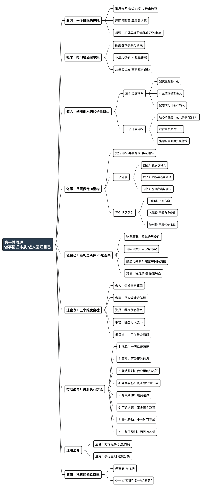

职场工具箱之第一性原理——做事回归本质，做人回归自己
Posted on 五 13 2月 2026 in Life
| Abstract | 职场工具箱之第一性原理——做事回归本质，做人回归自己 |
|---|---|
| Authors | Walter Fan |
| Category | 职场方法论 |
| Version | v1.0 |
| Updated | 2026-02-13 |
| License | CC-BY-NC-ND 4.0 |
短大纲（给忙人）
展开看看
- **一句话**：做事回归本质，做人回归自己 - **第一性原理**：剥离所有假设和类比，回到最基本的事实和约束 - **核心洞察**：大多数人在用"类比思维"做决策，高手用"第一性原理" - **应用场景**：技术选型、职业规划、创新思考职场工具箱之第一性原理——做事回归本质，做人回归自己
一、那个让我睡不着的夜晚
有一阵子，我的状态不太对。并没有惊天动地的变故，工作也照常推进，但心里总像压着一块石头：不重，却不肯落地。
临睡前，还是忍不住又看了一眼消息：群里有人轻描淡写地问了一句“有空看下吗”；明天的日历从早排到晚，缝隙都被会议塞满；还有一份文档停在最后一段——只差一句结论，却迟迟落不下笔。
这些都不算紧急的大事，却像夜里未灭的灯，明明不刺眼，却让人无法真正安睡。更折磨人的，是脑子里不断冒出的疑问：“要是我没及时回应，会不会显得不可靠？会不会错过什么关键机会？”越想越清醒，越清醒越焦虑。
后来我才明白：很多内耗并不是因为事情太多，而是我不自觉地把外界的评价体系，当成了衡量自己的坐标。
我们从小被教导要“努力”“上进”“不落人后”，却很少有人停下来问一句：我究竟在追什么？这些追逐真的是我想要的吗？
于是，我想起了一个能把人从惯性里拽出来的老方法：第一性原理。
二、什么是第一性原理：把问题还给事实
第一性原理，可以理解为一种“回到原点”的思考方式：不急着沿用现成答案，不急着照搬惯例，而是把问题拆到最基本、最可靠的事实与约束，再从那里重新推导路径。
它不神秘，甚至很朴素：
先问清楚“究竟是什么”，再讨论“应该怎么做”。
一个经典例子：火箭为什么一定那么贵？
马斯克在做火箭时，行业报价高得惊人。大多数人会从“怎么便宜一点”入手：谈判、替换供应商、优化采购流程。可他换了一种问法：
- 火箭究竟由哪些部分构成？
- 这些材料与制造环节的真实成本各是多少？
- 报价里那段巨大的差额，究竟来自哪里？
当问题被拆回事实，思路就不再局限于“小幅节省”，而会转向“定价逻辑是否合理”“流程是否可以重构”。很多时候，突破来自于此：不是把旧路走得更快，而是发现原本就不必走旧路。
第一性原理的价值，也正在这里：它不让你更辛苦，而是让你更少做无用功。
接下来，我把它放进职场与人生，分成三个层面：做人、做事、做自己。
三、用第一性原理做人：别用别人的尺子量自己
人的困扰，很多时候来自一种隐蔽的“错位”：
我们明明在过自己的日子，却用别人的标准打分。
别人觉得你该更忙、更强、更体面、更“有结果”，你就不由自主地把这些评价装进心里；你开始害怕慢下来，害怕拒绝，害怕不被需要。久而久之，生活像一场考试，而你永远在赶下一张卷子。
第一性原理在“做人”上的用法，是把评价拆回本质：
我真正想要的是什么？我愿意为此付出怎样的代价？
三个问题，适合反复问自己
| 问题 | 容易随口说出的答案 | 更接近本质的追问 |
|---|---|---|
| 我真正想要的是什么？ | 成就、财富、体面 | 安稳、自由、内心的笃定 |
| 什么值得我长期投入？ | 别人的认可与掌声 | 对自己选择的认可与承担 |
| 我想成为什么样的人？ | 跟着“更好的机会”走 | 内外一致、能独立判断的人 |
很多人走到某个阶段，都会有类似的体会：我们追求的未必是更响亮的头衔，而是一种踏实——知道自己在做什么，也知道为什么而做。
三个日常自检：让自己少一点被牵着走
当你因为人际、站队、社交压力而烦躁时，不妨停一下，问自己：
- 这件事的核心矛盾是什么？（是事实问题，还是面子问题？）
- 我在害怕失去什么？（机会、关系、评价，还是自尊？）
- 这种焦虑来自真实风险，还是来自他人的标准？
把问题问到这里，很多情绪就会从“雾”变成“线”。线是可以理清的，雾只会让你越走越乱。
四、用第一性原理做事：从“照做”到“重构”
如果说做人是找回自己的坐标，那么做事就是在清晰坐标里解决问题。
职场里最常见的陷阱，是“沿用惯例”：
行业都这么做、前人都这么做、同事都这么做，于是你也这么做。可惯例不等于最优，经验也不等于答案。第一性原理提醒我们：先拆清楚目标与约束，再决定路径。
三个常见场景：同一件事，两种走法
| 场景 | 惯性做法（照着走） | 第一性原理做法（从本质推导） |
|---|---|---|
| 想创业 | 研究别人的成功路径 | 用户真正的痛点是什么？为何长期无人解决？我能否用更简单、更有效的方式切入？ |
| 想提升自己 | 跟风报课、跟风打卡 | 我真正短板在哪？需要的是知识、练习还是反馈？最短路径是什么？ |
| 想管理时间 | 套用别人的日程模板 | 我真正的价值产出在哪？哪些事是在消耗我？哪些可以砍掉或委托？ |
做事的层次差异，往往不在“更勤奋”，而在“更会提问”。能提出关键问题的人，才更可能做出关键决策。
技术人尤其容易踩的三个坑（也是所有人的坑）
-
只埋头加速，却不问方向。
很多人拼命优化效率、优化流程、优化绩效，却没定义自己要优化的到底是什么。方向不清时，越努力越容易偏离。 -
照搬他人路径，却忽略自身条件。
别人跳槽你也跳，别人转管理你也转，却没认真审视自己的边界：家庭、健康、风险偏好、性格特质。第一性原理强调：推导必须从你的事实出发，而不是从别人的故事出发。 -
只谈“对不对”，不算“值不值”。
有些方案在纸面上完美，但在资源、时间、组织结构的现实里并不划算。成熟的决策要同时看：本质、约束、代价与收益。
五、用第一性原理做自己：名利是条件，不是答案
谈到最后，仍要回到那个更大的问题：
我希望过怎样的一生？
《史记·货殖列传》写道：“天下熙熙，皆为利来；天下攘攘，皆为利往。”名利从来不是新话题。问题不在于追不追，而在于——你把它放在什么位置。
用第一性原理去拆：
- 物质基础确实重要：它是生活的边界条件，不能否认。
- 但名利不该成为唯一目标：它更像“条件”，而非“答案”。
- 真正的清醒，是在利益面前守住底线，在喧嚣之中保有判断。
对我而言，走到今天再回看，许多曾经以为“非要不可”的东西，都不再那么尖锐。更重要的是一种安宁：做事坦荡，心里不虚——仰不愧于天，俯不怍于人。
而这种安宁，来自一项看似普通却极难稳定拥有的能力：冷静。
很多时候，问题并没有我们想象得那么大；真正让人疲惫的，是情绪反复搅动后的耗损。能稳住自己，才能稳住局面。
六、速查表：第一性原理在职场与人生中的用法
| 维度 | 默认模式（惯性） | 第一性原理模式（回到本质） | 自检问题 |
|---|---|---|---|
| 做人 | 把外界评价当坐标 | 建立内在标准 | 这份焦虑来自哪里？是事实，还是想象？ |
| 做事 | 照搬惯例与模板 | 先拆目标与约束，再定路径 | 如果从头再来，我会怎么设计？ |
| 做选择 | 选“看起来更好”的 | 选“更符合目标函数”的 | 我真正要优化的是什么？ |
| 做取舍 | 什么都想要 | 识别边界，做减法 | 哪些坚持其实只是执念？ |
| 做自己 | 随大流追逐 | 以长期价值为锚 | 十年后回看，我会感谢现在的决定吗？ |
七、行动指南：一张拆解表，专治反复内耗
第一性原理最适合用在两类问题上：
方向性选择与反复出现的内耗。
它不适合用来琢磨每一件小事，否则容易陷入过度分析。
下面这张“拆解表”，建议你在焦虑、纠结、犹豫时拿出来填一遍。很多内耗的关键，往往藏在“我默认的那些应该”。
第一性原理拆解表（建议直接复制）
| 步骤 | 要写什么 | 提示 |
|---|---|---|
| 1. 现象 | 我在烦什么（用一句话） | 例如：“我担心不回消息显得不可靠” |
| 2. 事实 | 可验证的信息，不写感受 | “对方未给截止时间；以往晚回也未造成后果” |
| 3. 默认规则 | 我心里有哪些‘应该’ | “我必须随时在线”“我不能让人失望” |
| 4. 底层目标 | 我真正想守住什么 | “可靠”“产出”“健康”“关系清晰” |
| 5. 约束条件 | 现实边界有哪些 | 时间、精力、职责、底线 |
| 6. 可选方案 | 至少 3 个选项 | 立即回 / 明早回 / 给出明确答复时间 |
| 7. 最小行动 | 10 分钟内能完成的一步 | “回复：我明早 10 点前给结论；如紧急请电话” |
| 8. 可复用规则 | 写成下次可用的原则 | “非紧急信息：24 小时内回复，并给具体时间点” |
你会发现：很多纠结并非败在“事实”，而是败在“想象中的应该”。
一旦把“应该”写出来，它就不再神秘，也不再统治你。
明天就能做的三件事（选一件即可）
- 今天：挑一件最近让你焦虑的事，按表拆一遍，看看真正的矛盾在哪里。
- 本周：列出三件你“以为重要”但“其实可以放下”的事，认真做一次减法。
- 本月：找一个你长期照着做的选择或习惯，问自己：如果从零开始，我还会这样选吗？
一句话总结：先把问题还给事实，再把选择还给自己。
写在最后
你最近一次“照着别人的活法过”，是在什么时候？
如果从本质重新推导，你还会走同一条路吗？
愿你我都能拆解掉外界强加的“应该”，把生活过得更清明、更自在。
手握灵珠常奋笔，心开天籁不吹箫。
思维导图
@startmindmap
<style>
mindmapDiagram {
node { BackgroundColor #F8F9FA; RoundCorner 8; Padding 8; FontSize 13 }
:depth(0) { BackgroundColor #2C3E50; FontColor white; FontSize 16; FontStyle bold }
:depth(1) { FontSize 14; FontStyle bold }
:depth(2) { FontSize 13 }
:depth(3) { FontSize 12 }
}
</style>
* 第一性原理\n做事回归本质 做人回归自己
** 起因：一个难眠的夜晚
*** 消息未回 会议排满 文档未收束
*** 表面是琐事 真实是内耗
*** 根源：把外界评价当作自己的坐标
** 概念：把问题还给事实
*** 拆到基本事实与约束
*** 不沿用惯例 不照搬答案
*** 从事实出发 重新推导路径
** 做人：别用别人的尺子量自己
*** 三个灵魂拷问
**** 我真正想要什么
**** 什么值得长期投入
**** 我想成为什么样的人
*** 三个日常自检
**** 核心矛盾是什么（事实/面子）
**** 我在害怕失去什么
**** 焦虑来自风险还是标准
** 做事：从照做走向重构
*** 先定目标 再看约束 再选路径
*** 三个场景
**** 创业：痛点与切入
**** 成长：短板与最短路径
**** 时间：价值产出与减法
*** 三个常见陷阱
**** 只加速 不问方向
**** 抄路径 不看自身条件
**** 论对错 不算代价收益
** 做自己：名利是条件 不是答案
*** 物质基础：承认边界条件
*** 目标函数：安宁与笃定
*** 底线与判断：喧嚣中保持清醒
*** 冷静：稳定情绪 稳住局面
** 速查表：五个维度自检
*** 做人：焦虑来自哪里
*** 做事：从头设计会怎样
*** 选择：我在优化什么
*** 取舍：哪些可以放下
*** 做自己：十年后是否感谢
** 行动指南：拆解表八步法
*** 1 现象：一句话说清楚
*** 2 事实：可验证的信息
*** 3 默认规则：我心里的“应该”
*** 4 底层目标：真正想守住什么
*** 5 约束条件：现实边界
*** 6 可选方案：至少三个选项
*** 7 最小行动：十分钟可完成
*** 8 可复用规则：原则与习惯
** 适用边界
*** 适合：方向选择 反复内耗
*** 避免：事无巨细 过度分析
** 收束：把选择还给自己
*** 先看清 再行动
*** 少一些“应该” 多一些“愿意”
@endmindmap

扩展阅读
- 《第一性原理》 —— 李善友 — 混沌大学创新思维教科书
- Elon Musk on First Principles Thinking — YouTube 访谈
- 亚里士多德《形而上学》 — 第一性原理的哲学源头
系列回顾
- 4D 总结法
- 黄金圈法则
- TNB 表达模型
- FAB 提案法
- STAR 面试法
- 同理心三方法
- 5W1H + 8C1D
- 艾森豪威尔矩阵
- PDCA 循环
- SMART 原则
- 领导力
- 逻辑树
- 解决问题五步法
- 5 个 Why
- 沟通四要素 CARE
- 金字塔原理
- 三点法
- DACI
- 四线复盘法
- RAPID
- 5S 问题处理法
- SWOT 自我定位
- AARRR 漏斗
- 第一性原理（本篇）
- RACI
- 非暴力沟通
- SCAMPER
- MVP 思维
- ABC 情绪理论
- AI Agent 学职场英语
- 向上管理
- OODA 循环
本作品采用知识共享署名-非商业性使用-禁止演绎 4.0 国际许可协议进行许可。